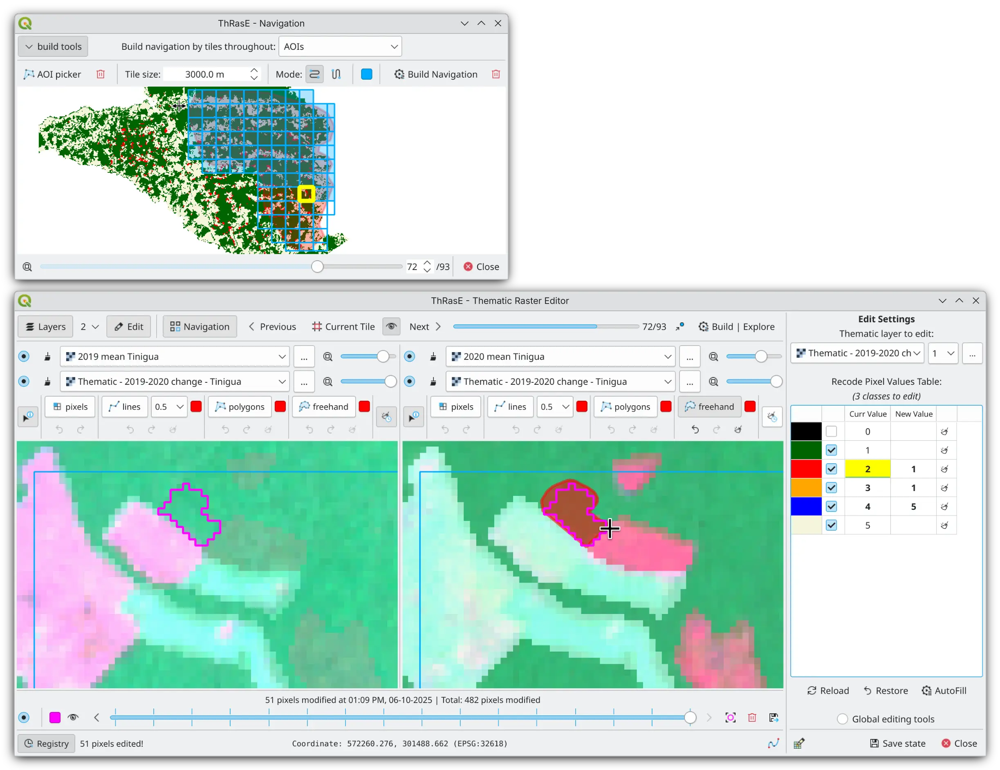

ThRasE - Thematic Raster Editor#
{kind=link}
Overview#
ThRasE is an open-source QGIS plugin designed for manual post-classification correction and quality assurance of thematic maps. It provides a comprehensive workspace for editing raster classifications through synchronized multi-view panel configurations that enable blending multiple layers for visual comparison. The plugin features a recode pixel table for modifying multiple classes simultaneously through precise editing tools for pixel-level corrections. An integrated modification tracking system records every change with timestamps and original values, enabling traceability and visual highlighting of edited areas. Systematic tile-based navigation ensures complete spatial coverage during inspection, while session persistence enables seamless multi-day workflows by preserving workspace configuration and review progress.
Install#
ThRasE is available from the official QGIS Plugin Repository. To install it:
Open QGIS and go to
Plugins→Manage and Install Plugins….In the search bar, type
ThRasEand clickInstall Plugin.Once installed, activate the plugin via the
Pluginsmenu orPlugins toolbar.
When and Why Use ThRasE?#
Thematic maps are essential tools that translate complex spatial data into actionable insights, but their reliability depends on rigorous quality assurance. Automated classification methods, while powerful, inevitably introduce errors. Satellite-based classifications can produce errors of omission or commission, scale mismatches, or temporal misalignments with ground conditions. These limitations don’t undermine the value of thematic maps, but they highlight the critical importance of quality assurance.
Post-classification correction serves as a widely adopted final step to refine misclassifications and improve map quality [1]. A common approach involves integrating ancillary data and knowledge-based rules to resolve misclassifications, reduce commission errors, and enhance overall accuracy [2, 3]. These corrections rely on manual editing or semi-automated techniques guided by expert knowledge and reference data.
ThRasE addresses this need by providing a dedicated environment for manual post-classification work with integrated editing tools, systematic inspection capabilities, and modification tracking in a single workspace.
Who Is ThRasE For?#
ThRasE is designed for anyone who needs to review, correct, or validate thematic maps:
Remote sensing analysts working with land cover classifications who need to correct misclassifications using visual interpretation of satellite imagery
GIS specialists responsible for quality control of thematic products, ensuring that final maps meet accuracy requirements before publication or delivery
Environmental monitoring teams conducting systematic reviews of forest maps or other environmental datasets where accuracy is critical for decision-making
Research teams who need to manually refine classification results, annotate training data, or validate model outputs with expert knowledge